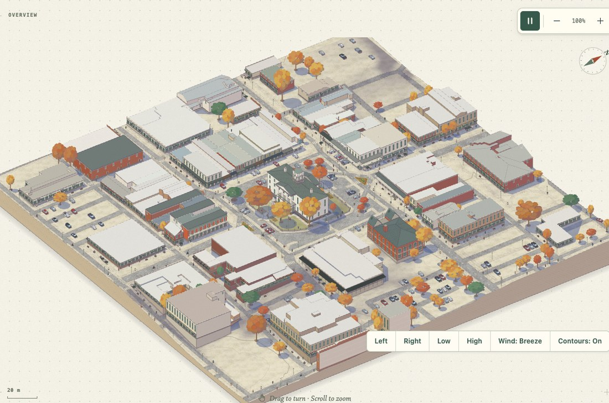
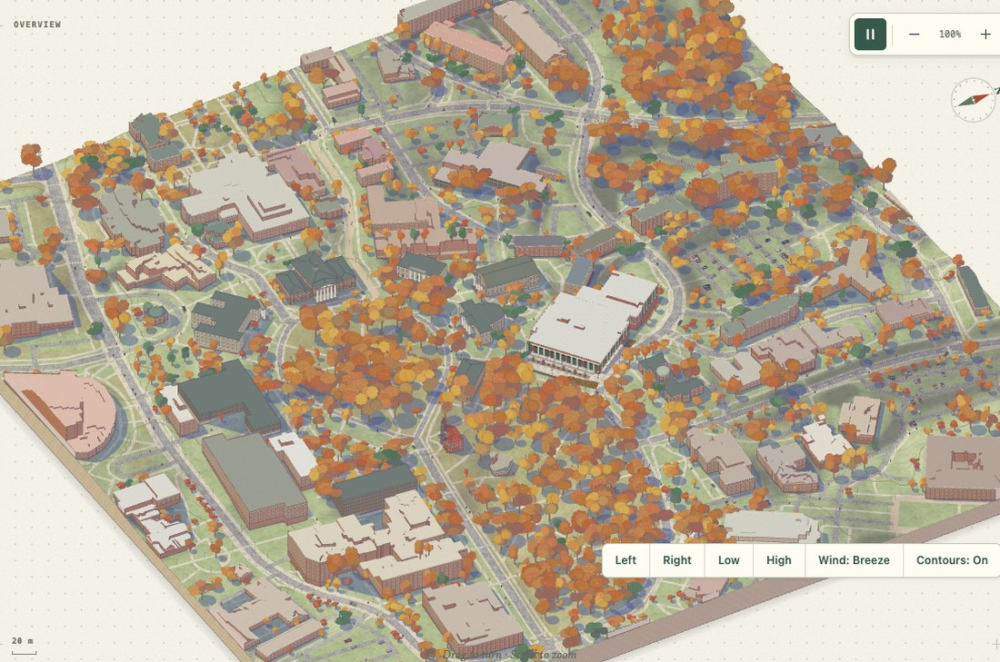
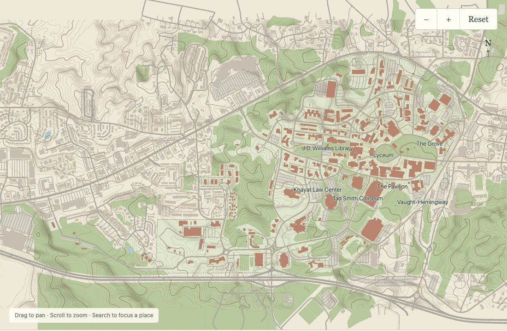

Oxford,
in miniature.
The town square, the historic campus, and a wider map of Ole Miss, drawn on the real ground: surveyed hills, measured roofs, and every tree where the lidar found it.

The Square.
The courthouse on its ridge, with 15 m of real relief, 62 measured roofs, galleries and awnings, and the festival crowds around the Square.
Explore the Square ↗
Under the Grove trees.
The Lyceum, Circle, Grove, Student Union and Lamar Hall on 23 m of surveyed slope, under 1,012 mapped trees, with gameday in the Grove.
Explore the campus diorama ↗
A little more room
to wander.
Find academic buildings and athletics facilities across the main campus, now over hillshade and two-metre contours.
Open the campus-wide map ↗Built from OpenStreetMap outlines, USGS 3DEP lidar and NAIP aerial imagery. Ground, building heights, roof forms and tree positions are measured; wall colours, windows, storefronts, weather, and street life are interpreted illustrations. Each map includes its sources and field notes. The maps work offline; source links open on the web.